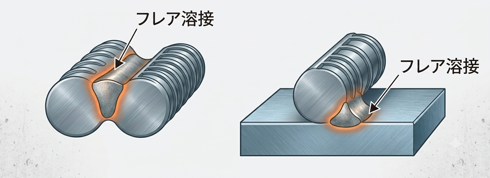

鉄筋の溶接とは？種類（エンクローズ・フレア）の特徴と適用場面
鉄筋の溶接とは、鉄筋同士をアーク溶接で接合する継手の総称です。鉄骨では溶接は一般的ですが、鉄筋の溶接が使われる場面は多くありません（鉄筋継手は重ね継手・圧接継手が主流のため）。この記事では、鉄筋の溶接の意味・代表的な2種類（エンクローズ溶接・フレア溶接）・特徴・適用場面を、告示の規定とあわせて整理します。
- 鉄筋の溶接は鉄筋継手のひとつ。主な種類はエンクローズ溶接とフレア溶接。
- エンクローズ溶接＝鉄筋端部の突合せ溶接（径25mm超の主筋に適用）。フレア溶接＝丸鋼の円弧状のすき間を利用した溶接で、杭頭補強筋の接合に使う。
- 規定は告示第1463号などにある。溶接部は欠陥がなく、母材以上の溶接材料を用いる。
鉄筋の溶接とは？
鉄筋継手の方法のひとつに溶接継手があります。鉄筋を溶接して継手とする方法ですが、実務で使う箇所はそれほど多くありません。鉄筋の継手は、一般に圧接継手や重ね継手を用いるためです。溶接は、これらが使いにくい特殊な納まり（杭頭補強筋など）で活躍します。
告示1463号の規定
鉄筋の溶接継手は、告示第1463号などに規定があります。主な内容を整理すると次のとおりです。
- 溶接継手は突合せ溶接とすること。ただし、径25mm以下の主筋等は重ねアーク溶接継手（フレア溶接）とできる（※公共建築工事標準仕様書では径16mm以下）。
- 溶接部は欠陥がないものとすること。
- 溶接される鉄筋の強度・性能以上の溶接材料を用いること。
鉄筋の溶接の種類
鉄筋の溶接には、おもに次の2種類があります。
- エンクローズ溶接：鉄筋の断面を突合せ溶接する方法。
- フレア溶接：丸鋼の円弧状のすき間（フレア）を利用した溶接。
エンクローズ溶接
エンクローズ溶接とは、鉄筋の断面（端部）を突き合わせて行う突合せ溶接です。溶接部の周囲を裏当て材で囲って（エンクローズ＝囲い込みして）アーク溶接することからこの名があります。
- 告示では、径25mmを超える主筋はエンクローズ溶接（突合せ溶接）が必要です。
- 開先はI型開先を用います。
フレア溶接
フレア溶接とは、丸鋼（鉄筋）の曲面どうし、または鉄筋と鋼板（鋼管）の間にできる円弧状のすき間（フレア）を利用して溶接する方法です。代表的な用途が杭頭補強筋の接合で、鋼管杭などに補強筋を溶接する際に使われます。

径の小さい鉄筋（告示で径25mm以下の主筋等、公共建築工事標準仕様書では径16mm以下）では、突合せ溶接に代えてフレア溶接（重ねアーク溶接継手）とできます。
鉄筋の溶接のまとめ表
| 項目 | 内容 | 備考 |
|---|---|---|
| エンクローズ溶接 | 鉄筋断面を突合せ溶接する方法 | 径25mm超の主筋に適用／I型開先 |
| フレア溶接 | 丸鋼の円弧状のすき間を利用した溶接 | 杭頭補強筋の接合に使用 |
| 重ね継手・圧接継手 | 一般的な鉄筋の継手方法 | 溶接継手より広く使われる |
まとめ
- 鉄筋の溶接は鉄筋継手のひとつ。代表はエンクローズ溶接とフレア溶接。
- エンクローズ溶接は径25mm超の主筋の突合せ溶接、フレア溶接は杭頭補強筋の接合で一般的。
- 規定は告示1463号等にあり、溶接部は欠陥なし・母材以上の溶接材料を用いる。施工管理と検査が重要。
継手の全体像は「鉄筋継手の種類とは？」、圧接は「鉄筋の圧接（ガス圧接）とは？」、鉄筋を接触させない継手は「あき重ね継手とは？」をどうぞ。
※溶接継手の適用径・開先・検査の詳細は、告示・公共建築工事標準仕様書・各規準や年度の改定により異なる場合があります。実務では必ず採用基準の最新版をご確認ください。